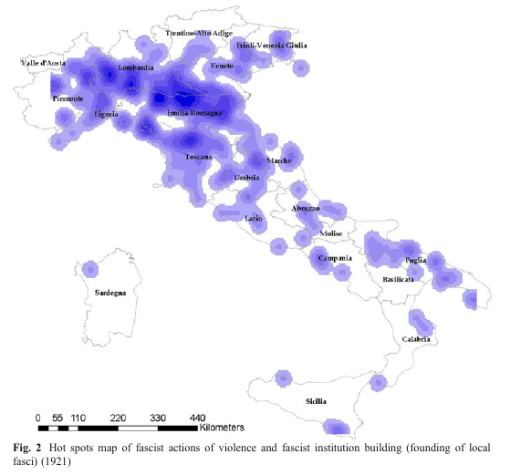

Capítulo 3 Organização dos dados quanto a sua estrutura
Podemos pensar a organização de dados quanto à sua estrutura de três formas: dados estruturados, dados semi estruturados e dados não estruturados.
3.1 1) Dados estruturados
Formatos de arquivos estruturados são csv,xml, json, xls, xlsx, etc. Muitos destes possuem formato de tabela, o que torna bastante fácil encontrar a informação buscada.
3.1.1 Os formatos csv (comma separeted values) e tsv.
O formato csv (comma separeted values ou “valores separados por vírgula”) é um dos mais simples, consiste de arquivo de texto simples, com valores separados por um caractere (ou conjunto de caracteres) que separam os valores em cada linha, sendo geralmente vírgula ou ponto e vírgula ou tabulação (tecla tab). Qualquer caractere ou conjunto de caracteres pode ser usado como separador de campos. Na imensa maioria dos casos cada linha é separada pela quebra de linha. Por exemplo, a seguinte tabela:
| Estado | sigla | capital | região |
|---|---|---|---|
| Acre | AC | Rio Branco | Norte |
| Alagoas | AL | Maceió | Nordeste |
| Amapá | AP | Macapá | Norte |
| Amazonas | AM | Manaus | Norte |
| Bahia | BA | Salvador | Nordeste |
| Ceará | CE | Fortaleza | Nordeste |
Em abrirmos o csv no bloco de notas (notepad):
Estado;sigla;capital;região;
Acre;AC;Rio Branco;Norte;
Alagoas;AL;Maceió;Nordeste;
Amapá;AP;Macapá;Norte;
Amazonas;AM;Manaus;Norte;
Bahia;BA;Salvador;Nordeste;
Ceará;CE;Fortaleza;Nordeste;O separador de campo neste arquivo CSV é o ponto e vírgula ;.
Ao pedirmos ao computador para localizar qual a designação da sigla “AP”, ele saberá buscar facilmente esta informação.
No caso ali, a vírgula é o separador de campos, mas qualquer outro caractere pode ser usado como separador.
O formato .tsv, por exemplo, é separado por tabulação - ou o símbolo \t.
Mas é possível encontrar arquivo csv, porém com separador tipo “ ou”;".
3.2 2) Dados não estruturados
Os dados não estruturados são a forma como encontramos em livros impressos, artigos, são a forma como humanos lêem textos.
“Algum tempo hesitei se devia abrir estas memorias pelo principio ou pelo fim, isto é, se poria em primeiro logar o meu nascimento ou a minha morte. Supposto o uso vulgar seja começar pelo nascimento, duas considerações me levaram a adoptar differente methodo: a primeira é que eu não sou propriamente um autor defunto, mas um defunto autor, para quem a campa foi outro berço; a segunda é que o escripto ficaria assim mais galante e mais novo. Moysés, que tambem contou a sua morte, não a poz no introito, mas no cabo: differença radical entre este livro e o Pentateuco….”
Este tipo de texto, não estruturado, é alvo do Processamento de linguagem natural (PLN)/ Natural Language Process (NLP)
3.3 3.Dados semi-estruturados
Dados semi-estruturados são um meio termo entre os estruturados e os semi estruturados. Por vezes são chamados de “auto-descritivos”
3.3.1 Exemplos de dados semi-estruturados
3.3.1.1 O formato Json
O Json (“JavaScript Object Notation”, isto é “Notação de Objetos JavaScript”), é organizado no esquema de pares nome/valor.
Por exemplo, ao separarmos primeiro nome firstName de sobrenome lastName no Json:
{"employees":[
{ "firstName":"João", "lastName":"da Silva" },
{ "firstName":"Ana", "lastName":"Maria" },
{ "firstName":"Joaquim", "lastName":"Xavier" }
]}- O arquivo json inicia e termina com colchetes
[] - Todo Json é delimitado por chaves
{}, - os dados são representados no esquema nome/valor `
"nome": "valor". - estes são separados por vírgula.
Caso queira mais detalhes sobre este formato:
- Um video introdutório sobre o formato Json do canal Código Fonte TV JSON // Dicionário do Programador.
- Um video introdutório mais prático sobre Json, JSON em 6 minutos do canal “Canal TI”.
- Para ver as regras de sintaxe do Json.
3.3.1.2 Markup
Códigos especiais, ou linguagem “markup” é uma notação de documento que tem duas apresentações, uma simplificada como texto normal para humanos, e outra com os “markup” para que o computador entenda.
3.3.1.2.1 O formato Markdown
Um exemplo bem simples de markup é o Mardown, usado na escrita rápida de textos.

Exemplo de markdown
3.3.1.3 O formato YAML
O YAML é um padrão de serialização de dados que prima por ser “human friendly”, isto é, de fácil leittura também para humanos.
Em arquivos markdown tem-se usado o yaml como cabeçalho, com informações para a renderização do pdf, como título, subtítulo, resumo, palavras chave, etc. Ao converter markdown para o formato final, o computador irá interpretar estas informações.
Um exemplo de yaml no arquivo markdown:
---
title: "Título do meu pdf"
subtitle: subtitulo qualquer
author: Fulano de Tal
fontsize: 12pt
urlcolor: blue
geometry: margin=2.5cm
abstract: >
meu resumo bla bla bla bla
---
# Titulo
Texto texto texto texto texto texto texto
## Subtitulo
Texto texto texto texto texto texto texto O cabeçalho em yaml é delimitado no seu início e fim por três traços consecutivos ---.
3.3.1.4 O Formato LaTex
O LaTex é uma linguagem usada na confecção, principalmente de textos (livros, artigos) acadêmicos, bem como apresentações. O formato LaTex permite grande flexibilidade, e é muito usado para escrever fórmulas matemáticas e gerar as referências bibliográficas automaticamente. Por isso, o LaTex é muito usado no contexto acadêmico. O seu formato mínimo pode ser visto assim:
\documentclass{article}
\begin{document}
Olá Mundo
\end{document}
Exemplo de LaTex
Ou em um exemplo um pouco mais elaborado:
Exemplo de LaTex
Perceba que antes de \begin{document}, isto é, no cabeçalho do documento temos várias informações, entre elas o título do artigo na linha 5 em title{}, e em \author{}, nas linhas de 6 a 8, temos os autores. Temos também delimitados os capítulos ou seções, no caso ali em section{}.
3.3.1.5 Os formatos xml e html
No caso, nome seria “FirstName” e seu valor seria “João”, nome seria “lastName” e seu valor “da Silva” E esses mesmos dados no formato xml:
<employees>
<employee>
<firstName>João</firstName> <lastName>da Silva</lastName>
</employee>
<employee>
<firstName>Ana</firstName> <lastName>Maria</lastName>
</employee>
<employee>
<firstName>Joaquim</firstName> <lastName>Xavier</lastName>
</employee>
</employees>Algumas linguagens usadas em texto são chamadas de markup, onde o que é mostrado na tela, para humanos lerem, difere do que o computador “entende”. Exemplo é o xml acima, o html ou ainda linguagens como markdown e LaTex.
O html tem por base o xml. O html possui basicamente a seguinte estrutura
<!doctype html>
<html>
<head>
<title>Titulo da pagina</title>
</head>
<body>
<h1>Título do capítulo</h1>
<p>Texto texto texto</p>
</body>
</html>Se você copiar o conteúdo acima e salvar num arquivo com o nome, digamos teste.html e abrí-lo com seu navegador de internet (firefox, Chrome, Opera, etc.), verá como funciona esta ideia de markup.
No caso do html, os valores são delimitados por tags, por exemplo:
> <ALGO>conteudo</ALGO>
onde </ indica que estamos fechando a tag. Assim:
<h1>Título do capítulo</h1>O texto “Título do capítulo” está entre a tag “h1”.
Temos duas partes no html:
- Entre
<head>e seu fechamento,</head>ficam os metadados, como título, data, etc. - Entre
<body>e</body>fica o conteúdo da página que aparece dentro do navegador.
Um outro exemplo:
<name>Joaquim José da Silva Xavier</name>,
o Tiradentes (<local>Fazenda do Pombal</local>,
batizado em <data>12 de novembro de 1746</data> —
<local>Rio de Janeiro</local>,
<data>21 de abril de 1792</data>),
foi um <profissao>dentista</profissao>, <profissao>tropeiro</profissao>,
<profissao>minerador</profissao>, <profissao>comerciante</profissao>,
<profissao>militar</profissao> e <profissao>ativista político</profissao> <gentilico>brasileiro</gentilico>,
que atuou nas capitanias de <local>Minas Gerais</local> e <local>Rio de Janeiro</local>.Onde podemos ver tags como <name>, <local>, <data>, etc. ao redor de certas informações, o que torna possível ao computador encontrar estas informações.
Grande parte do trabalho em análise textual trata-se passar do formato não-estruturado para o semi-estruturado ou estruturado, para que possamos trabalhar programaticamente.
Por exemplo, Franzosi (2010) ao fazer análise da narrativa de jornais italianos da época de ascensão do Fascismo, passou textos não estruturados como este:
Republicans plunged in Bissone di S. Cristina around 10pm of this month at the pub Prati. A guy, who went by the name of “captain,” took out a list of names and did the roll call loudly.
Para o seguinte formato:
[Semantic triplet 1: [Participant: [Actor: republicans]] [[Process: [[Verb: plunge]
[Circumstances: [Space: [City: Bissone di S. Cristina] [[Location: pub]
[Name: Prati]]]] [[Time: [Date: 05/07/1921] [Hour: 10pm]]]]]
[Semantic triplet 2: [Participant: [Actor: captain]] [Process: [[Verb: does roll
call] [Circumstances: [Type of action: loudly] [Instrument: list]]]
[Participant: [Actor: workers]]Para tal, Franzosi desenvolveu um software para análise de narrativas textuais, o PC-ACE (Program for Computer-Assisted Coding of Events) e pôde ter uma noção da violência cotidiana na época:

Tabela de Franzosi. List of daily occurences of triplets of violence in the Avanti! database
(FRANZOSI, p.607)

Frequency distribution of triplets of violence in the Avanti! database
(FRANZOSI, p.607)
E ainda fez um “mapa de calor” (“heat map”) com a localização da violência fascista na Itália 
(FRANZOSI, p.609)
Referência:
- FRANZOSI, Roberto P.. Sociology, narrative, and the quality versus quantity debate (Goethe versus Newton): Can computer-assisted story grammars help us understand the rise of Italian fascism (1919–1922)?. Theor Soc (2010) 39:593–629. DOI 10.1007/s11186-010-9131-3
Os dados semi-estruturados não tem, portanto, formato de tabela, mas contêm indicações de informações mais abstratas, através de tags ou outras marcações. Com base nestas informações que faremos análises de texto. Este processo de transformação de dados não estruturados em estruturados é chamado de “datificação”.